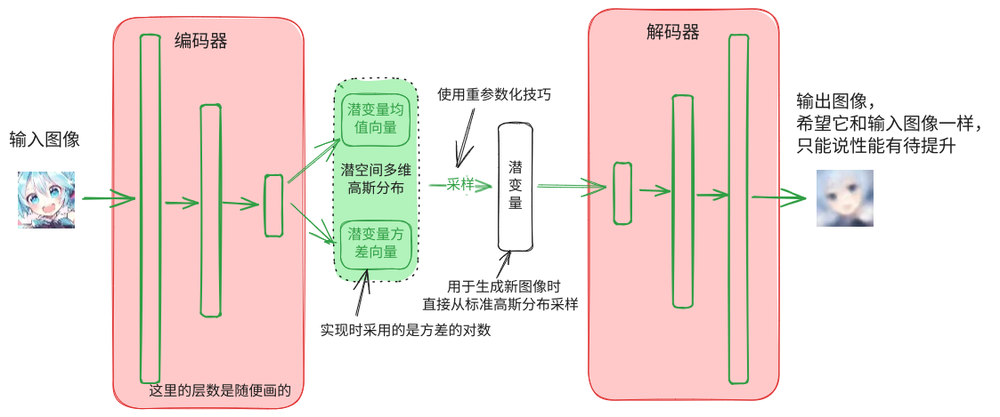

变分自编码器（VAE）实现及其数学原理探究
导言
要动手实现一个VAE不算太难，但是为了把它的数学原理搞清楚真的花了我不少时间，概率论没学好导致的。这里按照先讲代码实现，再深究数学原理的顺序来介绍VAE。希望能让像我一样的数学苦手可以比较容易地搞懂这玩意儿。（话说搞出VAE的那伙人是先通过数学方法证明模型成立再在计算机上实现，还是先做出来之后发现它work再进一步研究出数学原理的呢）。
现在主流的生成模型有：生成对抗网络（GAN），扩散模型（主要是DDPM），自回归，基于能量的生成模型，以及我们将要谈到的VAE，Variational Auto Encoder，变分自编码器。横向比较之下VAE的效果其实并不算好，与GAN和DDPM相比还是有那么亿点差距，生成出来的图像非常模糊，但是效果不好没必要学习，我们先把VAE的这个理念先搞清楚，顺便温习（重修）一下概率论的相关知识，为后面学习扩散模型做准备。
简单介绍变分自编码器
自编码器
全称为自动编码器，Auto Encoder，看名字就知道这是变分自编码器的基础。其由编码器（Encoder）和解码器（Decoder）两部分构成。输入图像通过编码器编码为潜变量（latent variables，也叫隐变量），潜变量再通过解码器尽可能还原为原图像。训练时两个部分同时训练，损失就是输出图像与原图像的L2损失（均方误差）。自编码器的精髓在于其潜变量的维度（长度）远小于原图像的维度（大小），这迫使神经网络在训练过程中学习通过更少的数据量尽可能保留原图像中的信息。这类似一种有损的压缩-解压的过程，但具体的压缩和解压的算法都由神经网络自主学习得到，这也正是自动编码器中“自动”的由来。
在实现上，自编码器中编码器的网络结构和分类器差不多，都是通过带stride的卷积或者下采样方法将特征图（就是在神经网络层间传递的张量）一层一层缩小，最后展平通过全连接层输出指定长度的潜变量。而解码器则与编码器相反，它输入潜变量，先将潜变量通过全连接层放大后再reshape成一张小的特征图，再通过反卷积（ConvTranspose）或者上采样一层一层放大，最后还原到与原图像相同的大小。
变分自编码器
变分自编码器的实现与自编码器的实现几乎完全一样，只有两个改动，然而正是这两个改动将其变为了一个生成模型，数学原理上也有了很大的差别。这是变分自编码器的结构示意图，如图所示，其与自编码器相比最大的变化就是编码器不再直接输出潜变量，而是输出与潜变量相同长度的均值和方差向量，构成一个近似标准高斯分布潜空间多维高斯分布，由这个分布中采样出一个潜变量再交给解码器还原原图像。 
另一改动个则是在损失函数添加了一个KL散度用于正则化。变分自编码器除了希望其解码器输出和输入尽可能相同，还希望编码器输出的潜空间高斯分布尽可能接近标准高斯分布，因此在损失函数中加入了这两个分布的KL散度。KL散度的详细介绍见后文，这里只需要知道KL散度用于计算两个分布间的差异，因此优化KL散度可以使两个分布趋近相同。变分自编码器的损失如下 式中x为输入图像，y为解码器输出图像，mean与var为编码器输出的潜变量高斯分布的均值和方差，为KL散度损失的权重，是一个超参数。为均方误差，表示求KL散度。其中DL散度计算的是两个各维度相互独立的多维高斯分布，因此可以进一步化简为下式（后文KL散度介绍中有推导过程），其中dim为潜变量长度，其实就是每个维度逐个算完后加起来
写成代码如下，注意在实现中编码器输出的不是方差而是方差的对数，因此相关公式也有一定调整
1
2
3
4
5
6
7
8
9
10
11
12
13
14
15
16
17
18class VAE(torch.nn.Moudle):
...
# 从输入图像计算损失
def loss(self, x):
# 得到潜变量分布的均值和对数方差
latent_mean, latent_logvar = self.encoder(x)
latent_std = torch.exp(latent_logvar / 2) # 标准差
latent = latent_mean + latent_std * torch.randn_like(latent_mean) # 使用重参数化技巧采样得到潜变量
y = self.decoder(latent) # 重建图像
img_loss = torch.nn.functional.mse_loss(x, y) # 图像损失
# KL散度，这里没有乘以1/2因为反正都要乘上权重kl_weight
kl = torch.square(latent_mean) - latent_logvar + torch.exp(latent_logvar) - 1
kl_loss = torch.mean(kl)
return img_loss + kl_loss * self.kl_weight
使用VAE生成新图像则只需要用到其解码器，只需要随机生成一个标准高斯分布样本输入到解码器就可以生成新图像了。这是因为在训练过程中使用KL散度进行正则化使解码器的输入总是近似一个标准正态分布，因此解码器可以将随机生成的样本当作编码器生成的进行重建，从而达到了生成新图像的目的。从另一种角度来说，之所以普通的自编码器不能用于生成新图像的原因在于其潜空间中有意义的点（对应一个潜变量）是很稀疏的，如果直接在潜空间中采样会得到无意义的潜变量，解码得到混乱的图像。而VAE通过将潜变量分布通过正则化限制为标准高斯分布，使其在此分布中的每个点都有意义，都可以解码成正常的图像。有一个油管上的视频把VAE的原理讲得非常好，可以去看看Understanding Variational Autoencoder | VAE Explained
生成图像的过程写成代码如下，y就是生产的新图像，当然为了使用opencv进行保存或者展示还需要一些变换，比如将数据从可能保存在显存中的torch张量转化为numpy的张量，将channels对应的维度移到最后一维，因为模型训练集的颜色格式就是BGR和opencv的要求一致，所以不需要额外的转换……这些琐碎的东西其实弄多了自然就清楚了。
1
2
3
4
5
6
7
8
9
10
11
12
13
14
15
16
17
18
19
20
21
22
23
24class VAE(torch.nn.Moudle):
...
def sample(self, count: int) -> torch.Tensor:
"""
生成新图像
"""
self.eval() # 将神经网络切换为求值模式
# 采样标准高斯分布，使用count作为batch大小以一次生成count张图像
guass_noise_latent = torch.randn((count, self.latent_dim), device=self.device)
# 将输出限制在(0, 1)范围内
y = self.decoder(guass_noise_latent).clamp_(min=0, max=1)
return y
def vae_sample(model: VAE, count: int):
"""
生成图像后进行变换并保存到硬盘
"""
y = model.sample(count) # 生成
images = (y * 255).permute((0, 2, 3, 1)).numpy(force=True) # 变换
# 使用opencv保存
for i in range(count):
cv2.imwrite(os.path.join("results", f"gen{i}.png"), images[i])
基于Pytorch的实现
这边直接放代码，我的习惯是把神经网络的loss函数直接作为方法直接写在类中，以及用于生成图像的方法也直接写在类里面了。VAE包含两个超参数，隐藏层长度latent_dim和KL散度的权重kl_weight，网络输入的图像大小需要预先给定，并且要求图像的正方型的并且长宽能被16整除，实验中使用了的图像进行训练。网络是凭感觉随便设计的，反正能工作就行🤪，使用跨度为2的卷积层进行下采样，反卷积进行上采样。其他训练数据集处理部分没有任何特殊之处，也就不放代码了。
1
2
3
4
5
6
7
8
9
10
11
12
13
14
15
16
17
18
19
20
21
22
23
24
25
26
27
28
29
30
31
32
33
34
35
36
37
38
39
40
41
42
43
44
45
46
47
48
49
50
51
52
53
54
55
56
57
58
59
60
61
62
63
64
65
66
67
68
69
70
71
72
73
74
75
76
77
78
79
80
81
82
83
84
85
86
87
88
89
90
91
92
93
94
95
96
97
98
99
100
101
102
103
104
105
106
107
108
109
110
111
112
113
114
115
116
117
118
119
120
121
122
123
124
125
126
127
128import torch
class VAE(torch.nn.Module):
encoder: torch.nn.Module
decoder: torch.nn.Module
image_size: int
latent_dim: int
kl_weight: float
class _Chunk(torch.nn.Module):
def forward(self, x: torch.Tensor):
return x.chunk(2, dim=1)
def __init__(
self, image_size: int, latent_dim: int = 128, kl_weight: float = 0.05
) -> None:
super().__init__()
self.image_size = image_size
self.latent_dim = latent_dim
self.kl_weight = kl_weight
self.encoder = torch.nn.Sequential(
torch.nn.Conv2d(3, 32, 5, stride=2, padding=2),
torch.nn.BatchNorm2d(32),
torch.nn.LeakyReLU(),
torch.nn.Conv2d(32, 32, 3, padding=1),
torch.nn.BatchNorm2d(32),
torch.nn.LeakyReLU(),
torch.nn.Conv2d(32, 64, 3, stride=2, padding=1),
torch.nn.BatchNorm2d(64),
torch.nn.LeakyReLU(),
torch.nn.Conv2d(64, 64, 3, padding=1),
torch.nn.BatchNorm2d(64),
torch.nn.LeakyReLU(),
torch.nn.Conv2d(64, 128, 3, stride=2, padding=1),
torch.nn.BatchNorm2d(128),
torch.nn.LeakyReLU(),
torch.nn.Conv2d(128, 128, 3, padding=1),
torch.nn.BatchNorm2d(128),
torch.nn.LeakyReLU(),
torch.nn.Conv2d(128, 256, 3, stride=2, padding=1),
torch.nn.BatchNorm2d(256),
torch.nn.LeakyReLU(),
torch.nn.Conv2d(256, 256, 3, padding=1),
torch.nn.BatchNorm2d(256),
torch.nn.LeakyReLU(),
torch.nn.Flatten(),
torch.nn.Linear(256 * (image_size // 16) ** 2, latent_dim * 2),
self._Chunk(), # 分割为均值和方差
)
self.decoder = torch.nn.Sequential(
torch.nn.Linear(latent_dim, 256 * (image_size // 16) ** 2),
torch.nn.Unflatten(1, (256, image_size // 16, image_size // 16)),
torch.nn.Conv2d(256, 256, 1),
torch.nn.BatchNorm2d(256),
torch.nn.LeakyReLU(),
torch.nn.ConvTranspose2d(
256, 128, 3, stride=2, padding=1, output_padding=1
),
torch.nn.BatchNorm2d(128),
torch.nn.LeakyReLU(),
torch.nn.Conv2d(128, 128, 3, padding=1),
torch.nn.LeakyReLU(),
torch.nn.BatchNorm2d(128),
torch.nn.ConvTranspose2d(128, 64, 3, stride=2, padding=1, output_padding=1),
torch.nn.BatchNorm2d(64),
torch.nn.LeakyReLU(),
torch.nn.Conv2d(64, 64, 3, padding=1),
torch.nn.LeakyReLU(),
torch.nn.BatchNorm2d(64),
torch.nn.ConvTranspose2d(64, 32, 3, stride=2, padding=1, output_padding=1),
torch.nn.BatchNorm2d(32),
torch.nn.LeakyReLU(),
torch.nn.Conv2d(32, 32, 3, padding=1),
torch.nn.LeakyReLU(),
torch.nn.BatchNorm2d(32),
torch.nn.ConvTranspose2d(32, 16, 3, stride=2, padding=1, output_padding=1),
torch.nn.BatchNorm2d(16),
torch.nn.LeakyReLU(),
torch.nn.Conv2d(16, 16, 3, padding=1),
torch.nn.LeakyReLU(),
torch.nn.BatchNorm2d(16),
torch.nn.Conv2d(16, 3, 1),
)
@property
def device(self) -> torch.device:
return next(self.parameters()).device
@staticmethod
def _latent_sample(
latent_mean: torch.Tensor, latent_logvar: torch.Tensor
) -> torch.Tensor:
latent_std = torch.exp(latent_logvar / 2) # 标准差
return latent_mean + latent_std * torch.randn_like(latent_mean)
def forward(self, x: torch.Tensor):
latent_mean, latent_logvar = self.encoder(x)
latent = self._latent_sample(latent_mean, latent_logvar)
y = self.decoder(latent)
return y
def loss(self, x: torch.Tensor) -> torch.Tensor:
latent_mean, latent_logvar = self.encoder(x)
latent = self._latent_sample(latent_mean, latent_logvar)
y = self.decoder(latent)
img_loss = torch.nn.functional.mse_loss(x, y)
kl = torch.square(latent_mean) - latent_logvar + torch.exp(latent_logvar) - 1
kl_loss = torch.mean(kl)
return img_loss + kl_loss * self.kl_weight
def sample(self, count: int) -> torch.Tensor:
"""
生成新图像
"""
assert not self.training
guass_noise_latent = torch.randn((count, self.latent_dim), device=self.device)
y = self.decoder(guass_noise_latent).clamp_(min=0, max=1)
return y
探究深层数学原理
前置知识
KL散度
又叫相对熵。KL散度用于评估两个分布之间差别有多大，就是输入两个分布，如果分布之间差别大，KL散度就大，当且仅当两个分布相同时KL散度为0。是不是很像分类模型的损失函数中交叉熵，其实看名字就知道相对熵和交叉熵关系密切，就差着一个分布的熵，自行百度。
设离散样本空间中有个事件，随机变量和将它们映射为，这两个随机变量即代表了输入的两个分布，分别对应概率函数和，它们的KL散度用如下方法计算
其中的底数可以取任意正数，一般使用2或者，本文中均假定使用，即相当于。
之前展示了离散的版本，连续分布当然也能计算KL散度，就是把求和改成积分，概率函数改为概率密度函数。之所以积分的范围变成了，是因为可以认为所有取不到的地方有，这样其实还是和在值域范围内求积分是一样的。
在实际计算时考虑可能存在但的情况，所以往往会在上加一个极小数以避免算出NaN(这种的技巧还是很常见的)，可以证明当时这样计算出的KL散度也趋近于实际上的KL散度，数值稳定性有保证。
KL散度有两个重要性质
- 非负，最小为0，这对损失函数是一个很好的性质
- 非对称，即，这就是为什么它被称为“散度”而非“距离”
VAE的损失函数中使用KL散度计算了由神经网络输出的高斯分布与标准高斯分布的差距（实际上输出了“潜空间长度”个高斯分布，但根据模型设定它们是相互无关的，所以我们可以只讨论一个，计算出KL散度后求和就行了）。根据高斯分布的概率密度函数，有 代入KL散度的计算公式，设定KL散度对数的底为，有 注意到（它们分别是常数积分，高斯分布的方差定义，高斯分布的二阶原点矩） 代入可得
通过使用KL散度计算分布之间的差别，这允许我们使用神经网络拟合复杂分布。在变分自编码器实现中其损失函数就用到了KL散度，在其数学推导之中更是占据大量篇幅，在学习变分自编码器之前搞清楚这个东西是很有必要的。可以再去看一下信息论（1）——熵、互信息、相对熵。
极大似然估计
极大似然估计是一种在总体的分布族已知（比如高斯分布，二项分布，指数分布等）但分布的参数未知时，使用一组样本估计整体分布参数的方法，而估计的标准是：使总体最有可能抽样出这组样本，即最大化总体抽样出这组样本的概率，此即“极大似然”。理解极大似然估计对我们理解VAE的数学原理是必要的。
举个例子，已知全校一年级学生的年龄服从高斯分布（地球上一般是均匀分布，这里可能是三体星上的一年级），但是其参数未知，于是通过抽样调查的100个一年级学生的年龄估计全校一年级学生年龄分布的参数，即高斯分布的均值和方差。
设全校一年级年龄分布即总体分布为（参数未知，是总体均值，是总体的标准差，即为方差），100名学生年龄构成的样本为(已知，只是没必要写出具体的值)。
则总体抽样出的概率如下
由于所有样本独立同分布，则总体抽样出
这组样本的概率就可以表示为每个子事件概率连乘
此即总体抽样出这组样本的概率，它是一个关于总体分布参数的函数，称为似然函数。我们要最大化总体抽样出这组样本的概率，即是最大化似然函数，即找到最优的参数，使取最大值。使用数学符号写作
优化一个连乘比较困难，一个通用的技巧是对似然函数取对数，这样连乘就变成了连加，此称为对数似然。而又由于对数函数单调递增的性质，最大化对数似然就等同于最大化似然函数，于是我们有
要最大，则这一块要最小，显然有，即总体均值的估计值等于样本均值。代入已经估计出的总体均值，有
使用函数取极值的套路，将对数似然对求导，然后令导函数为0
解得总体方差的估计值，其就是对数似然最大值点的证明略
这个方差的估计值就是样本的有偏方差（极大似然估计得到的方差就是有偏的，实际上还是无偏方差更精确，当然这都是题外话）